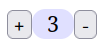
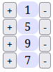
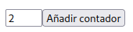
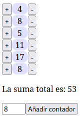
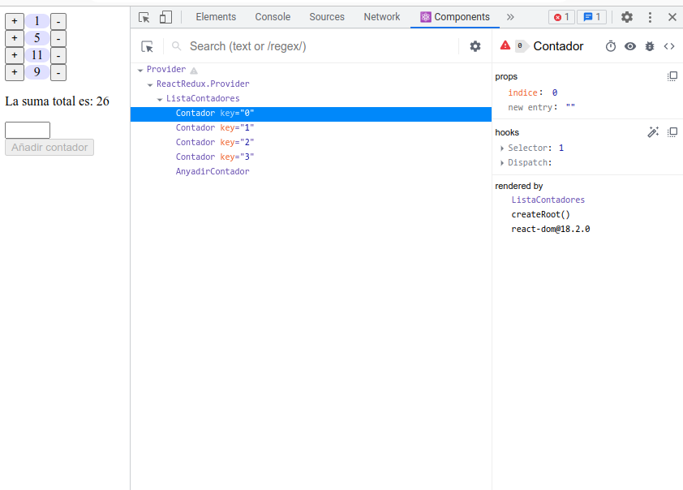
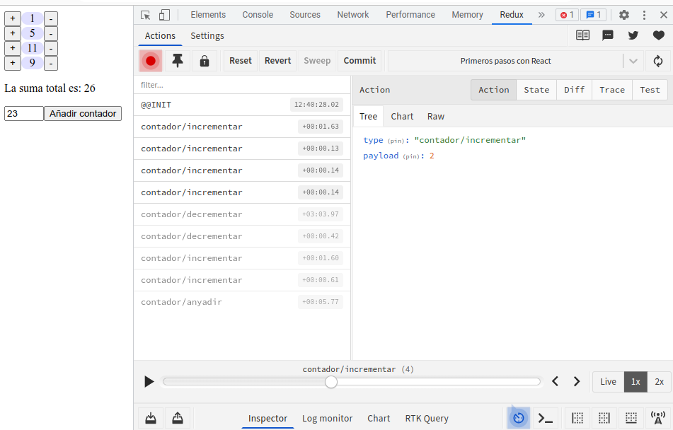

State reducers: aplicación a React y Redux
Programación Declarativa Aplicada
Máster en Ingeniería Informática
Facultad de Informática
Universidad Complutense de Madrid
Máster en Ingeniería Informática
Facultad de Informática
Universidad Complutense de Madrid
- Introducción a React
- Componentes React
- Componentes con estado
- Propagación explícita del estado
- Funciones reductoras de estado
- Propagación implícita con Redux
- Redux Toolkit
Introducción a React
React
- Biblioteca de código abierto para gestionar el front end en una aplicación SPA.
- Desarrollada y mantenida por Meta (Facebook).

Incorporar React al proyecto
- Utilizamos la versión 18 de React.
- Para incorporar en un proyecto de Node.js:
npm install react react-dom - React está dividido en varios paquetes:
react: funcionalidad básica para definir componentes.react-dom: renderización de componentes en el DOM de una página web.
Ejemplo: contador
- Como ejemplo, implementaremos un sencillo contador con botones para incrementarlo y decrementarlo:

- El modelo del contador es un número entero, que contiene el valor marcado.
const valorContador = 3;
Función vista
- En un contexto funcional, la vista es una función pura que transforma el modelo en un elemento del DOM que lo representa.
Vista del contador (sin JSX)
- La función
createElementde React permite crear nodos en el DOM virtual de la página:import React from 'react' function view(model) { return React.createElement('div', null, React.createElement('button', null, '+'), React.createElement('div', { className: 'contador' }, model.toString()), React.createElement('button', null, '-') ); }const valorContador = 3; const contadorDOM = view(valorContador);<div> <button>+</button> <div class="contador">...</div> <button>-</button> </div>
La función createElement
createElement(tag, props, contenido)
tag: etiqueta HTML del nodo a crear.props: objeto con los atributos HTML de ese nodo, onullsi no tiene atributos.- Los atributos tienen el mismo nombre que en HTML:
href,src,id, etc. - Excepción:
classNameen lugar declass.
- Los atributos tienen el mismo nombre que en HTML:
contenido: cadena de texto, o una lista de componentes.
La función createElement
Ejemplo:
React.createElement('a', { href: 'https://www.google.com' }, 'Enlace')
<a href="https://www.google.com">Enlace</a>
Ejemplo:
React.createElement('div', { className: 'marco', id: 'menu' },
'Pulsa aquí:',
React.createElement('button', null, 'Hola')
);
<div class="marco" id="menu">
Pulsa aquí:<button>Hola</button>
</div>
Renderizar el DOM virtual
- Para colocar un DOM virtual en la página hemos de tener un elemento raíz bajo el cual queremos colocarlo:
<!DOCTYPE html> <html> <head> <title>Primeros pasos con React</title> <link rel="stylesheet" href="index.css"/> <meta charset="utf-8"/> </head> <body> <div id="app"></div> Elemento raíz <script src="main.js"></script> </body> </html>
Renderizar el DOM virtual
- La biblioteca
react-domexporta la funcióncreateRoot, que permite renderizar el DOM virtual que hayamos creado mediantecreateElement(). - La función
createRootrecibe como parámetro una referencia al nodo DOM del elemento raíz.
import React from 'react'
import { createRoot } from 'react-dom/client'
// ...
const valorContador = 3;
const contadorDOM = view(valorContador);
Referencia a <div id=“app”>
const root = createRoot(document.getElementById('app'));
root.render(contadorDOM);
Uso de JSX
- Como alternativa a
createElement, se puede utilizar sintaxis HTML para crear el DOM virtual. - Esta traducción se realiza mediante una herramienta externa (Babel).
npm install --save-dev babel babel-loader npm install --save-dev @babel/core @babel/preset-react
Uso de JSX
- De este modo, en lugar de
function view(model) { return React.createElement('div', null, React.createElement('button', null, '+'), React.createElement('div', { className: 'contador' }, model.toString()), React.createElement('button', null, '-') ); }podemos tenerfunction view(model) { <div> <button>+</button> <div className="contador">{model}</div> <button>-</button> </div> }
Componentes React
Componentes
- Es posible crear componentes personalizados en React.
- Un componente es una función pura que recibe un objeto con sus propiedades y devuelve un DOM virtual.
function Componente(props) { return ...; } - De este modo, la siguiente etiqueta JSX,
<Componente attr1="v1" attr2="v2" .../>se traduce a la llamadaComponente({ attr1: "v1", attr2: "v2", ... })
Ejemplo: contador
function Contador(props) {
return <div>
<button>+</button>
<div className="contador">{props.valorInicial}</div>
<button>-</button>
</div>
}
o bien, descomponiendo props en el argumento con un valor por defecto:
function Contador({ valorInicial = 0 }) {
return <div>
<button>+</button>
<div className="contador">{valorInicial}</div>
<button>-</button>
</div>}
Módulos con componentes
- Puede extraerse el código del componente en un módulo aparte:
// Fichero Contador.jsx import React from 'react'; export default function Contador({ valorInicial = 0 }) { // ... }y utilizarse desde otro módulo// Fichero index.jsx import React from 'react'; import Contador from './Contador.jsx'; import { createRoot } from 'react-dom/client'; const root = createRoot(document.getElementById('app')) root.render(<Contador valorInicial={3}/>);
Componentes con estado
Componentes con estado
- Hasta ahora, nuestro contador es estático. No altera su valor ante las pulsaciones de los botones
+y-. - Para que el valor del contador se modifique, es necesario introducir el concepto de estado.
- En este caso, el estado de un contador se representa mediante un número entero, que es el valor del contador.
La función useState()
- Recibe un estado inicial y devuelve una lista con dos elementos:
- El valor actual del estado.
- Una función para cambiar el valor del estado (setter).
const [estado, setEstado] = useState(estadoInicial);
Ejemplo: contador
export default function Contador({ valorInicial }) {
const [valor, setValor] = useState(valorInicial);
return <div>
<button>+</button>
<div className="contador">{valor}</div>
<button disabled={valor === 0}>-</button>
</div>
}
Ejemplo: contador
- Los manejadores de eventos de pulsación de los botones
+y-modifican el estado:export default function Contador({ valorInicial }) { const [valor, setValor] = useState(valorInicial); function incrementar() { setValor(valor + 1); Modificar estado } function decrementar() { setValor(valor - 1); Modificar estado } return <div> <button onClick={incrementar}>+</button> <div className="contador">{valor}</div> <button disabled={valor === 0} onClick={decrementar}>-</button> </div> }
Modificar el estado
- Siempre debe modificarse el estado a través de la función de modificación (setter).
- Si se modifica el estado directamente mediante una asignación, no se actualizará el componente:
export default function Contador({ valorInicial }) { const [valor, setValor] = useState(valorInicial); function incrementar() { valor++; Incorrecto } function decrementar() { valor--; Incorrecto } return ...; }
Extendiendo la aplicación
- Podemos replicar nuestro componente
Contadorvarias veces en nuestra aplicación. - Cada componente tiene su propio estado y sus propios manejadores de eventos. Por tanto, los contadores no interfieren entre sí.
Extendiendo la aplicación
const app = <div>
<Contador valorInicial={1}/>
<Contador valorInicial={5}/>
<Contador valorInicial={9}/>
<Contador valorInicial={7}/>
</div>
const root = createRoot(document.getElementById('app'))
root.render(app);

Extendiendo la aplicación
- ¿Y si queremos calcular la suma de los valores de todos los contadores que hay en la página?
- El estado de la aplicación está «repartido» entre los distintos contadores. Tendríamos que monitorizar los cambios en cada uno de ellos para poder recalcular la suma.
- Una alternativa más sencilla es disponer de un estado centralizado en nuestra aplicación que contenga los valores de todos los contadores.
Extendiendo la aplicación
- Cuando se tiene un estado centralizado, hay distintas maneras de coordinar los distintos componentes de la página:
- Propagación explícita de estado: el estado se propaga de manera explícita por todo el DOM; los eventos, también.
- Propagación implícita de estado: cada componente puede acceder a la parte del estado que le corresponde sin tener que propagarlo explícitamente.
Propagación explícita del estado
Modificar componente Contador
- El componente
Contadorya no tendrá estado propio. - Por el contrario, tendrá varias propiedades:
valor: el valor del contador.onIncrementar: función a invocar cada vez que se pulse el botón+.onIncrementar: función a invocar cada vez que se pulse el botón-.
Codigo de Contador
import React from 'react';
export default function Contador({ valor,
onIncrementar = () => {},
onDecrementar = () => {} }) {
return <div>
<button onClick={() => onIncrementar()}>+</button>
<div className="contador">{valor}</div>
<button disabled={valor === 0} onClick={() => onDecrementar()}>
-
</button>
</div>
}
- Los valores por defecto de
onIncrementaryonDecrementarson() => {}, que representa una función sin parámetros y con un cuerpo vacío (es decir, una función que no realiza nada).
Componente ListaContadores
- Toda nuestra aplicación estará encapsulada en un componente llamado
ListaContadores. - El estado de este componente será un array de números enteros, que contendrá los valores de los contadores.
Código de ListaContadores
export default function ListaContadores({ valoresIniciales = [] }) {
const [estado, setEstado] = useState(valoresIniciales);
function incrementarContador(indice) { ... }
function decrementarContador(indice) { ... }
const suma = estado.reduce((x, y) => x + y, 0);
return <div>
{ estado.map((valor, i) =>
<Contador key={i}
valor={valor}
onIncrementar={() => incrementarContador(i)}
onDecrementar={() => decrementarContador(i)}/>)
}
<p>La suma total es: {suma}</p>
</div>
}
Código de ListaContadores
<Contador key={i}
valor={valor}
onIncrementar={() => incrementarContador(i)}
onDecrementar={() => decrementarContador(i)}/>
- El atributo
keytiene un significado especial en React. - Permite a React monitorizar los cambios en el DOM de manera más eficiente.
Código de ListaContadores
- Las funciones
incrementarContadorydecrementarContadorse encargan de actualizar el estado:function incrementarContador(indice) { setEstado( [...estado.slice(0, indice), estado[indice] + 1, ...estado.slice(indice + 1, estado.length)] ); } function decrementarContador(indice) { /* análoga */ } - La función
incrementarContadorconstruye un nuevo array igual que el original, salvo en la posiciónindice, donde tiene valorestado[indice] + 1.
Programa principal
import React from 'react'
import { createRoot } from 'react-dom/client'
import ListaContadores from './ListaContadores.jsx';
const root = createRoot(document.getElementById('app'))
root.render(<ListaContadores valoresIniciales={ [1, 5, 9, 7] }/>);
Añadir un nuevo contador
- Incorporamos un formulario para añadir un nuevo contador a la lista: 
- Encapsulamos este formulario en un componente:
export default function AnyadirContador({ onAnyadir = () => {} }) {
const [texto, setTexto] = useState('');
const valido = texto.match(/^\d+$/);
return <div>
<input type="text"
value={texto}
size="3"
onInput={evt => setTexto(evt.target.value)} />
<button disabled={!valido}
onClick={() => onAnyadir(parseInt(texto))}>
Añadir contador
</button>
</div>
}
Añadir un nuevo contador
- Modificamos el componente
ListaContadorespara incorporar este formulario:export default function ListaContadores({ valoresIniciales = [] }) { ... function anyadirContador(valorInicial) { setEstado([...estado, valorInicial]); } ... return <div> { estado.map((valor, i) => <Contador key={i} valor={valor} onIncrementar={() => incrementarContador(i)} onDecrementar={() => decrementarContador(i)}/>) } <p>La suma total es: {suma}</p> <AnyadirContador onAnyadir={anyadirContador}/> </div> }
Funciones reductoras de estado (state reducers)
State reducers
- Una función reductora de estado (state reducer) es una función pura que, a partir de un estado actual y una acción lógica, devuelve el estado resultante tras aplicar la acción.
Representación de acciones
- En el diagrama anterior, una acción no es una función, sino es una representación del comportamiento de la función, en forma de objeto.
- Similar al patrón Command [+]
- Nosotros representaremos las acciones como objetos con dos atributos:
type: tipo de acción a realizar (string)Por ejemplo:
"incrementar","anyadir", etc.payload: parámetros de la acciónPor ejemplo: valor inicial del contador a añadir.
Ejemplos
Acción incrementar el cuarto contador:
{ type: "contador/incrementar", payload: 4 }
Acción decrementar el primer contador:
{ type: "contador/decrementar", payload: 1 }
Acción añadir un nuevo contador con el valor 3:
{ type: "contador/anyadir", payload: 3 }
Función reducer
function reducer(estado, accion) {
switch (accion.type) {
case 'contador/incrementar': {
const ind = action.payload;
return [...estado.slice(0, ind),
estado[ind] + 1,
...estado.slice(ind + 1, estado.length)];
}
case 'contador/decrementar': { /* análoga */ }
case 'contador/anyadir': {
const valorInicial = action.payload;
return [...estado, valorInicial];
}
default: return estado;
}
}
Ventajas de un state reducer
- La función
reducer()es pura; no tiene efectos laterales. - Desacopla el cálculo del estado del código relativo a React.
- Al ser una función pura, es más fácil aplicar unit testing sobre ella.
Ejecución de un State reducer
function ejecutarAccion(accion) {
const nuevoEstado = reducer(estado, accion);
setEstado(nuevoEstado);
}
- La función
ejecutarAcciondebe propagarse a todos los componentes que emitan una acción:
return <div>
{ estado.map((valor, i) =>
<Contador key={i}
valor={valor}
indice={i}
ejecutarAccion={ejecutarAccion}/>) }
<p>La suma total es: {suma}</p>
<AnyadirContador ejecutarAccion={ejecutarAccion}/>
</div>
- El componente
Contadorqueda del siguiente modo:
export default function Contador({ valor, indice, ejecutarAccion = () => {}}) {
return <div>
<button onClick={() =>
ejecutarAccion({ type: "contador/incrementar", payload: indice })}>
+
</button>
<div className="contador">{valor}</div>
<button disabled={valor === 0} onClick={...}>-</button>
</div>
}
Propagación implícita con Redux
Redux
- Redux es una implementación del patrón State reducer visto en las semanas anteriores.
- Las aplicaciones Redux se basan en:
- Un contenedor que permite almacenar un estado global.
- Un mecanismo de emisión acciones lógicas que modifican el estado.
- Una función reductora que determina el siguiente estado a partir del estado actual y la acción a realizar.
Documentación de Redux: Should you use Redux?
Ejemplo: lista de contadores
- Estado: array con los valores de los contadores.
- Acciones:
- Incrementar un contador (
type:'contador/incrementar')payload: índice del contador a incrementar
- Decrementar un contador (
type:'contador/decrementar')payload: índice del contador a decrementar
- Añadir un contador (
type:'contador/anyadir')payload: valor inicial del nuevo contador
- Incrementar un contador (
Ejemplo: lista de contadores
- Función reductora:
function reducer(estado, accion) {
switch (accion.type) {
case 'contador/incrementar': {
const ind = action.payload;
return [...estado.slice(0, ind),
estado[ind] + 1,
...estado.slice(ind + 1, estado.length)];
}
case 'contador/decrementar': { /* análoga */ }
case 'contador/anyadir': {
const valorInicial = action.payload;
return [...estado, valorInicial];
}
default: return estado;
}
}
Requisitos de la función reductora
- Ha de ser una función pura.
- El estado siguiente debe depender solamente del estado actual y de la acción.
- No debe modificar el estado recibido como parámetro; ha de devolver otro estado nuevo.
- No debe producir efectos laterales.
- Ha de ser una función síncrona.
- Si se quiere utilizar funciones asíncronas, ha de hacerse a través de Middlewares.
Creación de un contenedor de estado
- Se utiliza la función
configureStore. - Esta función recibe un objeto con varios atributos.
reducer:función reductora de estadopreloadedState:estado inicial
Creación de un contenedor de estado
Ficheroestado.js:
import { configureStore } from '@reduxjs/toolkit'
function reducer(estado, accion) { ... }
const store = configureStore({
reducer: reducer,
preloadedState: [1, 5, 7, 9]
})
export default store
Uso en React
react-reduxproporciona un componenteProvider, que recibe un contenedor de estado y lo propaga a todos los elementos del DOM que estén en el interior delProvider.- El fichero
index.jscon el programa principal queda del siguiente modo:... import { Provider } from 'react-redux' import store from './estado.js' const root = createRoot(document.getElementById('app')) root.render( <Provider store={store}> 'store' será accesible desde ListaContadores <ListaContadores/> </Provider> );
El componente ListaContadores
- Ya no recibe ningún array con los valores iniciales de los contadores, porque los contadores lo obtendrán del estado.
- Tampoco tiene estado interno, ni recibe la función
ejecutarAccion, pues la función de emisión de eventos se propaga implícitamente. - No propaga los valores a los contadores, pero sí los índices.
El componente ListaContadores
export default function ListaContadores() {
const suma = ...;
const numeroContadores = ...;
return <div>
{ Array.from({length: numeroContadores}, (_, i) =>
<Contador key={i} indice={i}/>) }
<p>La suma total es: {suma}</p>
<AnyadirContador/>
</div>
}
- La llamada
genera un array de longitudArray.from({length: n}, (_, i) => f(i))n, cuya componentei-esima contiene el valorf(i).
El componente ListaContadores
- ¿Cómo definimos
sumaynumeroContadores? - El componente
ListaContadoresha de acceder al estado global. - Podemos acceder al estado mediante la función
useSelector. useSelectorrecibe una función que determina la información que desea obtenerse a partir del estado.
El componente ListaContadores
import { useSelector } from 'react-redux';
export default function ListaContadores() {
const suma = useSelector(state => state.reduce((x, y) => x + y, 0));
const numeroContadores = useSelector(state => state.length);
return <div>
{ Array.from({length: numeroContadores}, (_, i) =>
<Contador key={i} indice={i}/>) }
<p>La suma total es: {suma}</p>
<AnyadirContador/>
</div>
}
El componente Contador
- Cada contador obtiene su valor a partir del estado y de su índice.
export default function Contador({ indice }) {
const valor = useSelector(state => state[indice]);
return <div>
<button onClick={...}>+</button>
<div className="contador">{valor}</div>
<button disabled={valor === 0} onClick={...}>-</button>
</div>
}
onClick?La función dispatch
- Recibe una acción como parámetro, y la transmite al contenedor de estado para que la función reductora la procese.
- Es similar a la función
ejecutarAccionque teníamos previamente.
- Es similar a la función
- Podemos obtener esta función llamando a la función
useDispatch()dentro de un componente.
El componente Contador
import { useDispatch, useSelector } from 'react-redux';
export default function Contador({ indice }) {
const valor = useSelector(state => state[indice]);
const dispatch = useDispatch();
return <div>
<button
onClick={() => dispatch({type: 'contador/incrementar',
payload: indice})}>
+
</button>
<div className="contador">{valor}</div>
<button disabled={valor === 0}
onClick={() => dispatch({type: 'contador/decrementar',
payload: indice})}>
-
</button>
</div>
}
Encapsulación de acciones
- Para facilitar la mantenibilidad, es recomendable no crear objetos acción directamente desde los componentes, sino hacerlo a través de funciones factoría:
// estado.js ... export function incrementar(indice) { return { type: 'contador/incrementar', payload: indice }; } export function decrementar(indice) { return { type: 'contador/decrementar', payload: indice }; }
Encapsulación de acciones
import { incrementar, decrementar } from './estado.js';
export default function Contador({ indice }) {
...
return <div>
<button onClick={() => dispatch(incrementar(indice))}>+</button>
<div className="contador">{valor}</div>
<button disabled={valor === 0}
onClick={() => dispatch(decrementar(indice))}>
-
</button>
</div>
}
El componente AnyadirContador
- Mantenemos el contenido de texto como estado interno del componente, ya que no es relevante en el estado global de la aplicación.
import { anyadir } from './estado';
export default function AnyadirContador() {
const [texto, setTexto] = useState('');
const dispatch = useDispatch();
const valido = texto.match(/^\d+$/);
return <div>
<input type="text" value={texto}
onInput={evt => setTexto(evt.target.value)} size="3"/>
<button disabled={!valido}
onClick={() => dispatch(anyadir(parseInt(texto)))} >
Añadir contador
</button>
</div>
}
El componente AnyadirContador
- Implementamos la función factoría
anyadiren el ficheroestado.js:
// estado.js
...
export function anyadir(valorInicial) {
return {
type: 'contador/anyadir',
payload: valorInicial
};
}
Resultado

Resumen
- Hemos implementado un módulo con la función reductora de estado.
function reducer(state, action) { switch(action.type) { case 'contador/incrementar': return /* siguiente estado */ ... } } - Hemos definido funciones factoría para la creación de acciones.
function incrementar(indice) { return { type: 'contador/incrementar', payload: indice }; }
Resumen
- Hemos creado un contenedor de estado, indicando la función reductora y el estado inicial:
const store = configureStore({ reducer: reducer, preloadedState: [1, 5, 7, 9] }); - Hemos hecho que el estado esté disponible en nuestra aplicación mediante
el componente
Provider:const root = createRoot(document.getElementById('app')) root.render( <Provider store={store}> ... </Provider> );
Resumen
- Cada componente puede acceder al estado mediante
useSelector().const valorContador = useSelector(state => state[indice]); - Cada componente puede emitir acciones mediante
dispatch().const dispatch = useDispatch(); return <button onClick={() => dispatch(...)}>..</button>
Redux Toolkit
Redux Toolkit
- Es una biblioteca complementaria a Redux.
- Proporciona facilidades para la definición de acciones y de la función reductora de estado.
- Desde la versión 4.2.0 de Redux se recomienda la implementación de funciones reductoras y acciones mediante esta biblioteca, en lugar de hacerlo «a mano».
Redux Toolkit
- En Redux Toolkit se utiliza la función
createSlicepara crear acciones y funciones reductoras. - Esta función recibe un objeto con varios atributos:
name(string)
Nombre del contenedor (para acciones y para depuración)initialState(any)
Estado inicialreducers(object)
Objeto cuyos atributos son nombres de acciones y cuyos valores son las funciones reductoras asociadas a cada acción
Redux Toolkit
const slice = createSlice({
name: 'contador',
initialState: [1, 5, 7, 9],
reducers: {
incrementar: (estado, accion) => {
const ind = accion.payload;
return [...estado.slice(0, ind),
estado[ind] + 1,
...estado.slice(ind + 1, estado.length)];
},
decrementar: (estado, accion) => {
const ind = accion.payload;
return [...estado.slice(0, ind),
estado[ind] - 1,
...estado.slice(ind + 1, estado.length)];
},
anyadir: (estado, accion) => {
const valorInicial = accion.payload;
return [...estado, valorInicial];
}
}
});
Redux Toolkit
- A partir del resultado de
createSlicepodemos obtener las funciones factoría relativas a las acciones:const slice = createSlice(...); export const { incrementar, decrementar, anyadir } = slice.actions; - También podemos obtener la función reductora, que ya realiza la distinción de casos según el tipo de acción:
const slice = createSlice(...); ... const store = configureStore({reducer: slice.reducer});
Herramientas de desarrollador

Herramientas de desarrollador

Utiliza Redux si...
- La lógica relativa a la actualización del estado es compleja, y es mejor centralizarla en uno o varios módulos.
- El estado de la aplicación está disperso entre los distintos componentes de la interfaz.
- Se necesita depurar la evolución del estado a lo largo del tiempo.
No utilices Redux si...
- Solo quieres implementar un componente que sea reutilizable en distintas aplicaciones.
- La lógica de tu aplicación es simple.
Bibliografía
- A. Banks, E. Porcello
Learning React: Modern Patterns for Developing React Apps
https://ucm.on.worldcat.org/oclc/1335022957 -
Redux documentation
Redux Essentials
https://redux.js.org/tutorials/essentials/part-1-overview-concepts